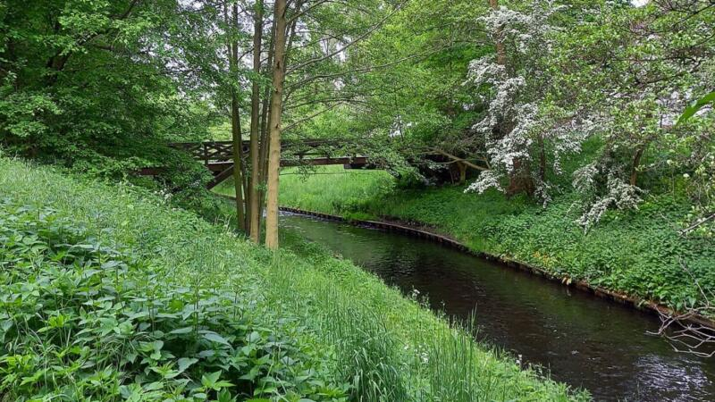
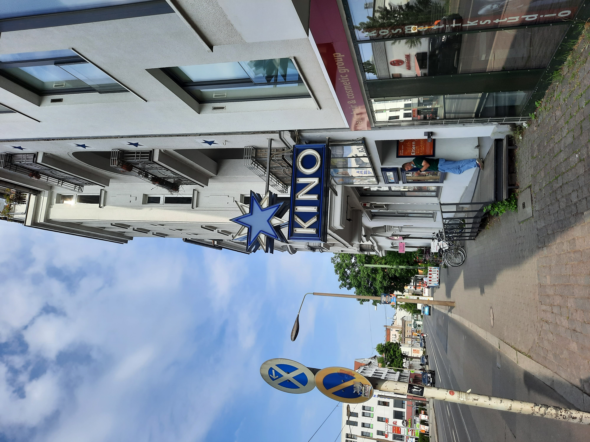

The namesake of the district: The Panke river
This river flows through the Berlin District. It's mostly shallow and children like to play in it on hot summer days.

Many parks, a lot of green
Next to the rier, there are a lot of parks in Pankow that can be visited to have a nice stoll in. These include "Schönholzer Heide," "Bürgerpark Pankow," "Schlosspark," and many more.

The cinema "Blauer Stern"
I've watched quite a lot of movies here back when I was younger. It was one of the few cinemas where you could sit whereever you wanted. Or whereever you found a free seat.